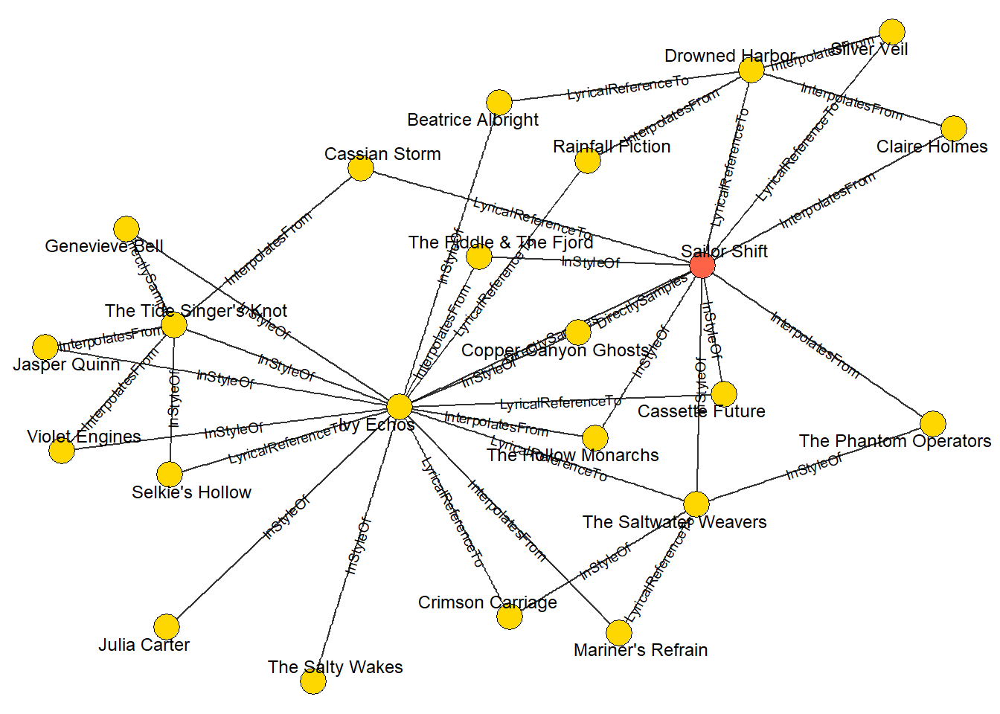

pacman::p_load(tidyverse, jsonlite, dplyr,
tidygraph, ggraph, knitr, igraph, visNetwork)Take-home Exercise 02
The Task
In this take-home exercise, Mini-challenge 1 from VAST challenge was chosen. In this Mini-Challenge 1, we are provided a knowledge graph of containing recording artists, albums, collaborations, concerts, influences, and more. The goal will be to develop visual analytics approaches to trace the rise of one artist and predict who will be next to break out.
1. Getting Started
1.1. Loading R packages
In this take-home exercise, the below packages below will be used:
tidyverse - Core collection of R packages designed for data science
jsonlite - Tools to read, write, and parse JSON data in R.
dplyr - A grammar of data manipulation with intuitive verbs like filter() and mutate().
tidygraph - Tidy tools for graph data, enabling dplyr-style manipulation of networks.
ggraph - A ggplot2 extension for visualizing network graphs.
knitr - Converts R code and markdown into dynamic, reproducible reports.
igraph - A comprehensive package for network analysis and graph algorithms.
visNetwork - Creates interactive network visualizations using vis.js in R.
1.2. Importing knowledge graph data
For the purpose of this exercise, MC1_graph.json file will be used. In the code chunk below, fromJSON() of jsonlite package is used to import MC1_graph.json file into R and save the output object
kg <- fromJSON("C:/Cindy-2312/ISSS608-VAA/Take-home_Exercise/MC1_release/MC1_graph.json")1.3. Extracting the edges and nodes table
Next, as_tibble() of tibble package package is used to extract the nodes and links tibble data frames from kg object into two separate tibble data frames called nodes_tbl and edges_tbl respectively.
nodes_tbl <- as_tibble(kg$nodes)
edges_tbl <- as_tibble(kg$links)1.4. Mapping from node id to row index
Before we can go ahead to build the tidygraph object, it is important for us to ensure each id from the node list is mapped to the correct row number. This requirement can be achieved by using the code chunk below.
id_map <- tibble(id = nodes_tbl$id,
index = seq_len(
nrow(nodes_tbl)))1.5. Map source and target IDs to row indices
Next, we will map the source and the target IDs to row indices by using the code chunk below.
edges_tbl <- edges_tbl %>%
left_join(id_map, by = c("source" = "id")) %>%
rename(from = index) %>%
left_join(id_map, by = c("target" = "id")) %>%
rename(to = index)1.6. Filter out any unmatched (invalid) edges
edges_tbl <- edges_tbl %>%
filter(!is.na(from), !is.na(to))1.7. Creating tidygraph()
graph <- tbl_graph(nodes = nodes_tbl,
edges = edges_tbl,
directed = kg$directed)
class(graph)[1] "tbl_graph" "igraph" Question 1: Who has Sailor Shift been most influenced by over time?
First approach: Static summary
# Check what edge types are available (e.g., InfluencedBy, InStyleOf, etc.)
unique_edge_types <- unique(edges_tbl$`Edhe Type`)Warning: Unknown or uninitialised column: `Edhe Type`.print(unique_edge_types)NULL# Get Sailor Shift's node ID
sailor_id <- filter(nodes_tbl, name == "Sailor Shift")$id
# Try multiple influence-related edge types
influence_types <- c("InterpolatesFrom", "RecordedBy", "PerformerOfComposerOf", "ProducerOf","InStyleOf", "LyricalReferenceTo" ,"CoverOf","DistributedBy","MemberOf", "LyricistOf", "DirectlySamples" )
# Find all edges where Sailor is the target and the edge is influence-related
sailor_influences <- edges_tbl %>%
filter(`Edge Type` %in% influence_types, target == sailor_id)
# Join with nodes_tbl to get details of source nodes (the influencers)
influencers_tbl <- sailor_influences %>%
left_join(nodes_tbl, by = c("source" = "id")) %>%
filter(`Node Type` == "Person") %>%
select(name, genre, notable, `Node Type`, everything())
kable(influencers_tbl, caption = "List of artists influenced by Sailor Shift")| name | genre | notable | Node Type | Edge Type | source | target | key | from | to | single | release_date | written_date | stage_name | notoriety_date |
|---|---|---|---|---|---|---|---|---|---|---|---|---|---|---|
| Cassian Storm | NA | NA | Person | LyricalReferenceTo | 17126 | 17255 | 0 | 17127 | 17256 | NA | NA | NA | Seraphina Vale | NA |
| Claire Holmes | NA | NA | Person | InterpolatesFrom | 17155 | 17255 | 0 | 17156 | 17256 | NA | NA | NA | Jaye Finch | NA |
# Standardize column names
edges_tbl <- edges_tbl %>%
rename(type = `Edge Type`)
# Check what edge types are available (e.g., InfluencedBy, InStyleOf, etc.)
unique_edge_types <- unique(edges_tbl$type)
print(unique_edge_types) [1] "InterpolatesFrom" "RecordedBy" "PerformerOf"
[4] "ComposerOf" "ProducerOf" "InStyleOf"
[7] "LyricalReferenceTo" "CoverOf" "DistributedBy"
[10] "MemberOf" "LyricistOf" "DirectlySamples" # Get Sailor Shift's node ID
sailor_id <- filter(nodes_tbl, name == "Sailor Shift")$id
# Try multiple influence-related edge types
influence_types <- c("InterpolatesFrom", "RecordedBy", "PerformerOfComposerOf", "ProducerOf","InStyleOf", "LyricalReferenceTo" ,"CoverOf","DistributedBy","MemberOf", "LyricistOf", "DirectlySamples" )
# Find all edges where Sailor is the target and the edge is influence-related
sailor_influences <- edges_tbl %>%
filter(type %in% influence_types, target == sailor_id)
# Join with nodes_tbl to get details of source nodes (the influencers)
influencers_tbl <- sailor_influences %>%
left_join(nodes_tbl, by = c("source" = "id")) %>%
filter(`Node Type` == "Person") %>%
select(name, genre, notable, `Node Type`, everything())
Conclusion for Question 1
Sailor Shift’s musical style has been shaped by multiple artists, most notably Cassian Storm and Claire Holmes. Through lyrical references and musical interpolation, their influence can be traced in her work. These connections highlight Sailor’s deep engagement with other artists’ material, reinforcing her commitment to honoring and evolving the Oceanus Folk and broader indie styles.
Question 2: Who has she collaborated with and directly or indirectly influenced?
Find direct collaborators
collab_roles <- c("PerformerOf","ComposerOf","LyricistOf","ProducerOf")
# Standardize column names
edges_tbl <- edges_tbl %>%
rename(`Edge Type` = type)
# 1. All works Sailor contributes to …
works <- graph %>%
activate(edges) %>%
filter(source == sailor_id & `Edge Type` %in% collab_roles) %>%
pull(target)
# 2. … everyone else credited on those works
# ── 1. collect the unique artist-IDs that appear as SOURCE on Sailor’s works ──
collab_ids <- graph %>%
activate(edges) %>%
filter(target %in% works,
`Edge Type` %in% collab_roles, # or `Edge Type` if you did not rename
source != sailor_id) %>%
pull(source) %>% # get the numeric IDs
unique()
# ── 2. look those IDs up in the node table ──
collaborators <- graph %>%
activate(nodes) %>%
as_tibble() %>% # convert to a plain tibble for clarity
filter(id %in% collab_ids) %>%
select(name, id)
print(collaborators)# A tibble: 48 × 2
name id
<chr> <int>
1 Zane Cruz 16958
2 Iris Moon 16959
3 Violet Engines 16960
4 Sophie Bennett 16983
5 Michael Harris 16984
6 Kara Lee 16985
7 Ethan Clarke 16986
8 Tidal Reverie 16987
9 Olivia Carter 16993
10 Lucas Bennett 16994
# ℹ 38 more rowscollab_roles <- c("PerformerOf","ComposerOf","LyricistOf","ProducerOf")
# 1. All works Sailor contributes to …
works <- graph %>%
activate(edges) %>%
filter(source == sailor_id & `Edge Type` %in% collab_roles) %>%
pull(target)
# 2. … everyone else credited on those works
# ── 1. collect the unique artist-IDs that appear as SOURCE on Sailor’s works ──
collab_ids <- graph %>%
activate(edges) %>%
filter(target %in% works,
`Edge Type` %in% collab_roles, # or `Edge Type` if you did not rename
source != sailor_id) %>%
pull(source) %>% # get the numeric IDs
unique()
# ── 2. look those IDs up in the node table ──
collaborators <- graph %>%
activate(nodes) %>%
as_tibble() %>% # convert to a plain tibble for clarity
filter(id %in% collab_ids) %>%
select(name, id)
print(collaborators)# A tibble: 48 × 2
name id
<chr> <int>
1 Zane Cruz 16958
2 Iris Moon 16959
3 Violet Engines 16960
4 Sophie Bennett 16983
5 Michael Harris 16984
6 Kara Lee 16985
7 Ethan Clarke 16986
8 Tidal Reverie 16987
9 Olivia Carter 16993
10 Lucas Bennett 16994
# ℹ 38 more rowsFind who influenced Sailor and who Sailor influences
# edge labels we care about
infl_edges <- c("InStyleOf","LyricalReferenceTo",
"InterpolatesFrom","DirectlySamples","CoverOf")
# every influence edge that touches Sailor OR Ivy-Echos
infl_tbl <- graph %>%
activate(edges) %>%
filter(`Edge Type` %in% infl_edges,
source == sailor_id | target == sailor_id |
source == nodes_tbl$id[nodes_tbl$name == "Ivy Echos"] |
target == nodes_tbl$id[nodes_tbl$name == "Ivy Echos"]) %>%
as_tibble()
# unique partner artists on those edges
partner_ids <- c(infl_tbl$source, infl_tbl$target) %>% unique()
# 4️⃣ restrict to Person / Group so songs & labels vanish
artist_ids <- nodes_tbl %>%
filter(id %in% partner_ids,
`Node Type` %in% c("Person","MusicalGroup")) %>%
pull(id)infl_graph <- graph %>%
activate(nodes) %>%
filter(id %in% artist_ids) %>% # keep Sailor + partner artists
activate(edges) %>%
filter(`Edge Type` %in% infl_edges, # keep only influence links
source %in% artist_ids,
target %in% artist_ids)infl_graph <- infl_graph %>%
activate(nodes) %>%
mutate(role = ifelse(id == sailor_id,
"Sailor", "Partner"))
ggraph(infl_graph, layout = "fr") +
geom_edge_link(aes(label = `Edge Type`),
arrow = arrow(length = unit(3,"pt"), type = "closed"),
label_size = 2.5, angle_calc = "along",
show.legend = FALSE, alpha = .8) +
geom_node_point(aes(fill = role), shape = 21, size = 6,
colour = "black") +
scale_fill_manual(values = c(Sailor = "tomato", Partner = "gold")) +
geom_node_text(aes(label = name), repel = TRUE, size = 3.2) +
guides(fill = "none") +
theme_void()
::::